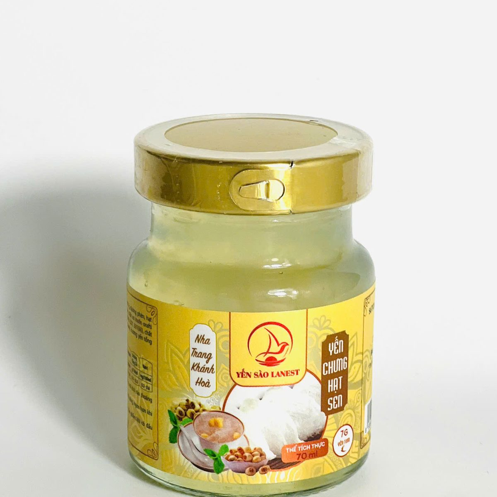
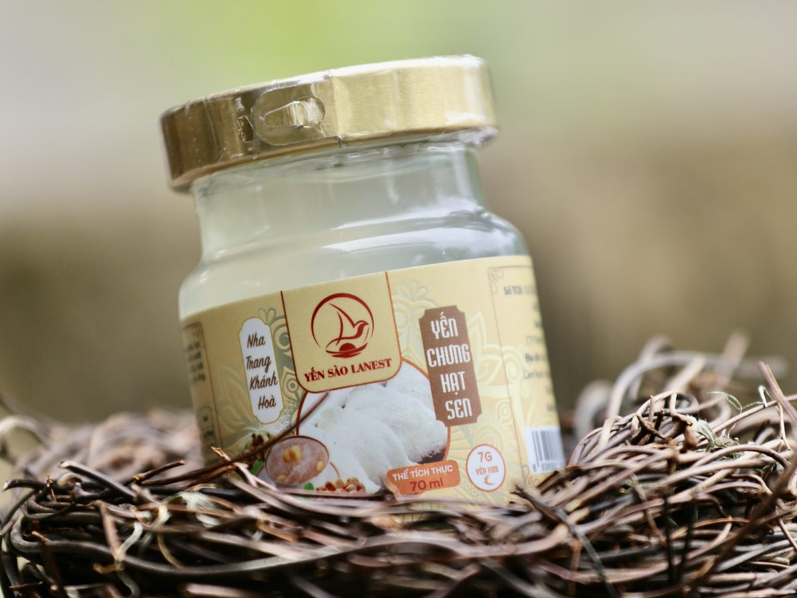

Yến Chưng Hạt Sen: Vị Thanh Dịu Cho Buổi Tối, Hợp Với Ai Và Cách Dùng
Yến Sào Lanest · Đăng ngày 05/11/2026

Yến chưng hạt sen là một trong những cách ăn yến lâu đời nhất của người Việt: sợi yến mềm, nước ngọt nhẹ, thoang thoảng mùi sen. Trong 14 vị yến hũ của Lanest, hạt sen là hũ nhiều khách chọn để dùng buổi tối. Bài này nói rõ trong hũ có gì, vị ra sao, hợp với ai, dùng lúc nào, và nếu tự chưng yến với hạt sen ở nhà thì làm theo các bước nào.
Hũ yến chưng hạt sen 70ml, 7g yến tươi, nhãn vàng
1. Vì sao yến hay được chưng cùng hạt sen?
Khi nhắc tới những thứ chưng chung với yến, các cẩm nang của Lanest gần như lần nào cũng kể tên hạt sen, bên cạnh táo đỏ và kỷ tử. Lý do dễ hiểu: hạt sen có vị bùi nhẹ, không lấn mùi yến như long nhãn hay táo đỏ, ăn kèm sợi yến thì vừa có cái mềm vừa có cái bùi.
Tài liệu giới thiệu sản phẩm của Lanest tả yến chưng hạt sen có hương vị dịu ngọt, thơm nhẹ đặc trưng của sen. Đây là vị dành cho người thích yến thanh, không quá ngọt, không nồng.
2. Trong một hũ yến chưng hạt sen Lanest có gì?
Yến chưng hạt sen thuộc dòng yến hũ 7g yến tươi, hũ thủy tinh 70ml. Theo danh mục sản phẩm của Lanest, mỗi hũ có hạt sen 0,6g cùng 7g yến tươi. Các thành phần còn lại (đường, phụ gia ổn định) ghi đầy đủ trên nhãn sau của hũ, anh chị nên đọc trước khi mua, nhất là người cần kiêng đường.
Vì dòng 7g có phụ gia ghi rõ trên nhãn, Lanest không gọi dòng này là "100% yến". Cách đọc từng dòng trên nhãn có trong bài cách đọc nhãn yến hũ chưng sẵn.
3. Yến chưng hạt sen hỗ trợ gì?
Bản mô tả từng vị của Lanest ghi yến chưng hạt sen:
- Hỗ trợ bồi bổ cơ thể, nâng cao sức khỏe.
- Hỗ trợ thư giãn thần kinh, cải thiện giấc ngủ.
- Hỗ trợ hệ tiêu hóa và phục hồi thể trạng.
- Hỗ trợ duy trì trạng thái cân bằng cơ thể.
Tất cả ở mức "hỗ trợ". Yến chưng hạt sen là thực phẩm, không phải là thuốc và không có tác dụng thay thế thuốc chữa bệnh. Người mất ngủ kéo dài, người đang điều trị bệnh hoặc đang dùng thuốc nên hỏi bác sĩ trước khi dùng thường xuyên.

Hũ yến chưng hạt sen chụp trên tổ đan trang trí, sợi yến nhìn rõ qua thành hũ
4. Yến chưng hạt sen hợp với ai?
Theo tài liệu sản phẩm, đối tượng gợi ý cho vị hạt sen là người mất ngủ, người hay căng thẳng và người lớn tuổi. Nhìn vào thực tế, có thể chọn như sau:
- Người làm việc nhiều, tối khó vào giấc: một hũ vị thanh trước giờ ngủ dễ uống hơn các vị đậm.
- Ông bà, cha mẹ lớn tuổi: vị dịu, ít mùi lạ, dễ quen. Xem thêm bài yến sào cho người cao tuổi.
- Người mới tập ăn yến: hạt sen và đường phèn là hai vị "dễ tính" nhất để bắt đầu.
Trẻ nhỏ nên dùng vị dành riêng cho trẻ em; người cần hạn chế đường nên chọn vị đường ăn kiêng. Bảng đầy đủ 14 vị có trong bài 14 vị yến chưng, chọn vị nào.
5. Dùng yến hũ hạt sen lúc nào, bao nhiêu?
- Buổi tối là hợp nhất với vị này. Cẩm nang của Lanest gợi ý dùng yến trước khi ngủ khoảng một tiếng, hoặc sáng sớm lúc bụng còn nhẹ. Không uống ngay sau bữa chính.
- Mở nắp là dùng được, hoặc chưng cách thủy nếu thích uống ấm. Đây là hướng dẫn in cho dòng 7g.
- Dùng đều, không dồn. Người trưởng thành khoảng 2–3 lần mỗi tuần, nhiều nhất 3–5 lần. Uống đều đặn quan trọng hơn uống liền vài hũ rồi bỏ.
- Đã mở nắp thì cất lạnh và dùng sớm, không để qua đêm ngoài nhiệt độ phòng.
6. Muốn tự chưng yến với hạt sen tại nhà
Nếu nhà có sẵn tổ yến tinh chế, anh chị có thể tự chưng theo các bước cơ bản Lanest đang hướng dẫn:
- Ngâm tổ yến trong nước lạnh 30–40 phút cho nở đều, mềm. Không ngâm nước ấm hay nóng.
- Cho yến đã ngâm vào thố sứ hoặc hũ thủy tinh chịu nhiệt, thêm hạt sen, đổ nước vừa ngập, đậy nắp.
- Chưng cách thủy lửa nhỏ 20–30 phút. Yến chín khi nước có bọt tăm nhẹ và sợi yến nổi lên. Không chưng quá lâu kẻo yến nát.
- Cho đường phèn khoảng 5 phút trước khi tắt bếp, nêm vừa miệng.
Tài liệu của Lanest chưa có định lượng hạt sen riêng cho yến tự chưng, nên anh chị cho theo khẩu vị nhà mình. Mỗi lần chỉ chưng vừa đủ ăn trong 1–2 ngày, cất ngăn mát. Muốn kết hợp thêm táo đỏ, long nhãn, kỷ tử thì xem bài yến chưng tứ vị; các bước chi tiết có ở bài hướng dẫn chưng yến đúng cách.
Câu hỏi thường gặp
Một hũ yến chưng hạt sen Lanest có bao nhiêu yến?
Mỗi hũ 70ml có 7g yến tươi và 0,6g hạt sen, theo danh mục sản phẩm của Lanest.
Yến chưng hạt sen và yến chưng tứ vị khác nhau thế nào?
Hũ hạt sen chỉ có một nguyên liệu phụ là hạt sen nên vị thanh, nhẹ. Hũ tứ vị có cả táo đỏ, long nhãn, hạt sen và kỷ tử, vị đậm và ngọt hơn.
Uống yến hạt sen buổi tối có sợ khó tiêu không?
Nên uống lúc bụng nhẹ, cách giờ ngủ khoảng một tiếng và không ngay sau bữa chính. Ai có bệnh về tiêu hóa nên hỏi bác sĩ trước.